|
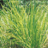
|
Palmarosa (Cymbopogon
martinii)
certified organic crop
Extraction method: steam distillation from the grass
Palmarosa belongs to the scented grass family. The oil smells
fresh and sweet with a hint of geranium. Unfortunately, owing
to the high geraniol content, it is often used to adulterate
rose oil. This very mild essential oil has a seductive aroma
and enhances compassion, relaxation and vitality. An excellent
oil for skincare and as a bath oil. |
|
Patchouli (Pogostemon
cablin)
certified organic crop
Extraction method: steam distillation from the leaves
An essential oil full of energy and passion. The base note is
earthy and promotes a grounding and balancing effect. It drives
away gloomy thoughts. Patchouli is said to be an aphrodisiac
and it has a sedative as well as a stimulating effect. Its bracing
action on the central nervous system may account for this. It
also repels insects and moths. |
| 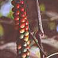 |
Pepper, Black (Piper nigrum)
certified organic crop
Extraction method: steam distillation from the fruit
A warm, spicy fragrance. The essential oil has a generally invigorating
and stimulating effect. It gives tone to skeletal muscles and
dilates local blood vessels. It is therefore suitably used in
warming massages, especially on athletes and dancers. Black
Pepper has a soothing protective effect and gives a feeling
of security. The ideal oil for cold winter days. Caution: use
sparingly. |
| 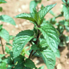 |
Peppermint (Mentha piperita)
certified organic crop
Extraction method: steam distillation from the flowering herb
Our peppermint is grown at a Demeter co-operative in southern
Piedmont. Peppermint has a powerful aroma excellent for mental
fatigue and it is stimulating in cases of tiredness and lack
of energy. It has a cooling and purifying effect, and helps
to increase concentration and clear thinking. Pleasantly refreshing
when travelling. Caution:
|
| 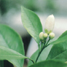 |
Petitgrain Bigarade
(Citrus aurantium bigaradia)
certified organic crop
Extraction method: steam distillation from the twigs
The name petitgrain means «little grain»; it comes
from the many tiny oil channels visible on an orange leave.
A wonderful woody and floral essential oil with an undertone
of orange and orange blossom. Petitgrain oil is invigorating,
strengthens the spirit and aids concentration. It is balancing
and relaxing. |
| 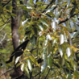 |
Ravintsara (Cinnamomum camphora)
certified organic crop
Extraction method: steam distillation from the leaves
Ravintsara is not particularly well known. The scent is fresh
and is reminiscent of eucalyptus. Ravintsara is a wonderfully
beneficial oil for the respiratory tract, facilitates deep breathing
and has a strong air-freshening effect. One of the best oils
for purifying and disinfecting a room. Mixed with tea tree oil
it is an ideal, prophylactic winter oil. See also specialist
literature. |
| 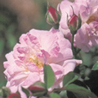 |
Rose, Bulgarian
(Rosa damascena)
best conventional quality
Extraction method: steam distillation from the flowers. The
«Queen of Flowers». The damask rose oil rose oil
is harmonising and balancing, has a soothing effect on the emotions
particularly grief, depression and jealousy and lifts the heart
and eases tension. Useful for all skin types but especially
for dry, mature and sensitive skin. Rejuvenating. We also stock
a 10% solution of Bulgarian rose oil, suitable for oil burners
and as a rose perfume. |
| 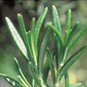 |
Rosemary, Cineol
(Rosmarinus officinalis) Cineol chemotype
certified organic crop
Extraction method: steam distillation from the twigs
«Rosmarinus» means «sea dew». Our rosemary
comes mainly from the Garrigue area of southern France. The
bush with its silver green needle-shaped leaves indicates its
invigorating, fiery and warming properties. Rosemary strengthens,
enlivens and stimulates the central nervous system and revitalises
the skin cells. It aids concentration and memory. Repels moths
and parasites. Caution: 
|
| 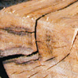 |
Rosewood (Aniba
rosaedora)
ecologically grown crop
Extraction method: steam distillation from the wood
Rosewood has a slightly woody scent with a soft rose note. This
is a balancing scent which touches the soul. It has a moisturising
and antibacterial effect, especially on dry skin. We sell rosewood
oil from guaranteed ecological cultivation (reforestation without
any intensive farming). |
| 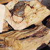 |
Sandalwood Mysore (Santalum
album)
wild crop
Extraction method: steam distillation from the heartwood
Genuine sandalwood, not to be confused with amyris oil, has
a warm, sweet, balsamic aroma and is regarded in India as a
holy scent for meditation. Sandalwood is comforting in times
of sadness, worries and emotional coldness. It is relaxing and
sedative, helps to create a suitable ambience for meditation,
and is a very sensuous, wonderful oil to use in massage and
skincare. Especially good for dry and dehydrated skin. |
| 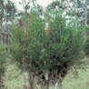 |
Tea tree (Melaleuca
alternifolia)
wild crop, certified organic
Extraction method: steam distillation from the twigs
We are able to offer genuine «bush oil», which denotes
a high quality product from its original area, with the right
soil quality for the development of the plant’s active
substances. Very purifying. An ideal disinfectant. For use as
a room freshener, helps to eliminate spots and blemishes, and
is good for cleansing greasy skin. Consult the specialist literature. |
| 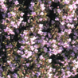 |
Thyme, Linalol (Thymus
vulgaris)
certified organic crop
Extraction method: steam distillation from the leaves and flowering
tops
Thyme likes abundant sunshine and stony soil, and can be found
growing wild in the Mediterranean area. A very invigorating,
fortifying oil for mental and physical exertion, it aids concentration
and stimulates the intellect. Thymol thyme is a fiery and powerful
species, whereas the linalol, geraniol and thujanol chemotypes
are mild. All types of thyme make excellent winter oils. |
| 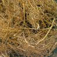 |
Vetiver
(Vetiveria zizanoides)
certified organic crop
Extraction method: steam distillation from the roots
Vetiver is a member of the sweet grass family. The viscous oil
has an earthy smell with herbaceous and sensuous undertones.
It is known as «the oil of tranquillity». Men in
particular like vetiver for its relaxing, regenerative and strengthening
properties. Many perfumes for men are based on the deep smoky
scent of this plant. Caution:
|
| 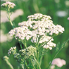 |
Yarrow (Achillea millefolium)
certified organic crop
Extraction method: steam distillation of the herb
One of the ancient healing plants used in many advanced cultures.
In China, the hard stalks were used to consult the oracle «I
Ching». The high azulene content is responsible for its
blue colour. Yarrow is harmonising and tension-relieving. A
general fortifier and a tonic to the vascular system and excellent
for hair- and skincare. |
| 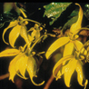 |
Ylang ylang, extra superior
(Cananga odorata genuina)
certified organic crop
Extraction method: steam distillation of the flowers
Ylang ylang means «flower of flowers». The scent
of the yellow-gold blossoms is irresistible. The «extra
superior» quality has the finest scent. Ylang ylang helps
to restore emotional imbalance, eases feelings of anger and
anxiety. A very sensuous oil for intimate moments. Ylang ylang
is an important component in natural perfumes. |
|
|
return
> H -O,
> A - G |